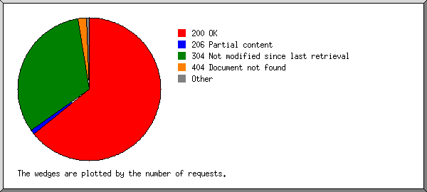
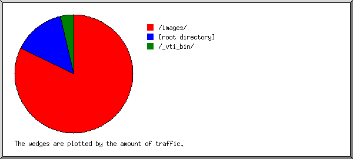

Web Server Statistics for tierrasegura.com
Web Server Statistics for tierrasegura.com
Program started on Mon, Sep 26 2005 at 7:19 AM.
Analyzed requests from Mon, Feb 28 2005 at 10:25 AM to Sun, Sep 25 2005 at 2:40 PM (209.18 days).
Web Server Statistics for tierrasegura.comProgram started on Mon, Sep 26 2005 at 7:19 AM.
Analyzed requests from Mon, Feb 28 2005 at 10:25 AM to Sun, Sep 25 2005 at 2:40 PM (209.18 days).
(Go To: Top | General Summary | Monthly Report | Daily Summary | Hourly Summary | Domain Report | Organization Report | Failed Referrer Report | Referring Site Report | Browser Report | Browser Summary | Operating System Report | Status Code Report | File Size Report | File Type Report | Directory Report | Request Report)
Figures in parentheses refer to the 7-day period ending Sep 26 2005 at 7:19 AM.
Successful requests: 961 (377)
Average successful requests per day: 4 (53)
Successful requests for pages: 143 (59)
Failed requests: 32 (8)
Distinct files requested: 72 (76)
Distinct hosts served: 37 (41)
Data transferred: 9.63 megabytes (4.59 megabytes)
Average data transferred per day: 47.15 kilobytes (671.15 kilobytes)
(Go To: Top | General Summary | Monthly Report | Daily Summary | Hourly Summary | Domain Report | Organization Report | Failed Referrer Report | Referring Site Report | Browser Report | Browser Summary | Operating System Report | Status Code Report | File Size Report | File Type Report | Directory Report | Request Report)
Each unit ( ) represents 2 requests for pages or part thereof.
) represents 2 requests for pages or part thereof.
| month | #reqs | #pages | |
|---|---|---|---|
| Feb 2005 | 96 | 12 |   |
| Mar 2005 | 488 | 72 |  |
| Apr 2005 | 0 | 0 | |
| May 2005 | 0 | 0 | |
| Jun 2005 | 0 | 0 | |
| Jul 2005 | 0 | 0 | |
| Aug 2005 | 0 | 0 | |
| Sep 2005 | 377 | 59 |   |
Busiest month: Mar 2005 (72 requests for pages).
(Go To: Top | General Summary | Monthly Report | Daily Summary | Hourly Summary | Domain Report | Organization Report | Failed Referrer Report | Referring Site Report | Browser Report | Browser Summary | Operating System Report | Status Code Report | File Size Report | File Type Report | Directory Report | Request Report)
Each unit () represents 2 requests for pages or part thereof.
| day | #reqs | #pages | |
|---|---|---|---|
| Sun | 14 | 4 | |
| Mon | 105 | 17 | |
| Tue | 267 | 37 | |
| Wed | 97 | 16 | |
| Thu | 24 | 1 | |
| Fri | 440 | 57 | |
| Sat | 14 | 11 | |
(Go To: Top | General Summary | Monthly Report | Daily Summary | Hourly Summary | Domain Report | Organization Report | Failed Referrer Report | Referring Site Report | Browser Report | Browser Summary | Operating System Report | Status Code Report | File Size Report | File Type Report | Directory Report | Request Report)
Each unit () represents 1 request for a page.
| hour | #reqs | #pages | |
|---|---|---|---|
| 0 | 1 | 1 | |
| 1 | 26 | 3 | |
| 2 | 0 | 0 | |
| 3 | 1 | 1 | |
| 4 | 33 | 4 | |
| 5 | 3 | 3 | |
| 6 | 2 | 2 | |
| 7 | 3 | 2 | |
| 8 | 4 | 3 | |
| 9 | 57 | 6 | |
| 10 | 125 | 10 | |
| 11 | 251 | 35 | |
| 12 | 22 | 10 | |
| 13 | 7 | 7 | |
| 14 | 1 | 1 | |
| 15 | 70 | 14 | |
| 16 | 134 | 10 | |
| 17 | 1 | 1 | |
| 18 | 120 | 15 | |
| 19 | 28 | 4 | |
| 20 | 3 | 2 | |
| 21 | 31 | 4 | |
| 22 | 36 | 4 | |
| 23 | 2 | 1 | |
(Go To: Top | General Summary | Monthly Report | Daily Summary | Hourly Summary | Domain Report | Organization Report | Failed Referrer Report | Referring Site Report | Browser Report | Browser Summary | Operating System Report | Status Code Report | File Size Report | File Type Report | Directory Report | Request Report)

Listing domains, sorted by the amount of traffic.
| #reqs | %bytes | domain |
|---|---|---|
| 297 | 39.78% | .net (Networks) |
| 414 | 32.88% | .gt (Guatemala) |
| 111 | 13.17% | .mx (Mexico) |
| 64 | 6.71% | .ni (Nicaragua) |
| 49 | 4.86% | .com (Commercial) |
| 10 | 1.56% | .cr (Costa Rica) |
| 11 | 0.90% | [unresolved numerical addresses] |
| 5 | 0.15% | .sc (Seychelles) |
(Go To: Top | General Summary | Monthly Report | Daily Summary | Hourly Summary | Domain Report | Organization Report | Failed Referrer Report | Referring Site Report | Browser Report | Browser Summary | Operating System Report | Status Code Report | File Size Report | File Type Report | Directory Report | Request Report)

Listing organizations, sorted by the number of requests.
| #reqs | %bytes | organization |
|---|---|---|
| 267 | 35.20% | popsite.net |
| 221 | 21.74% | intelnet.net.gt |
| 193 | 11.14% | guate.net.gt |
| 81 | 9.38% | prod-infinitum.com.mx |
| 64 | 6.71% | cablenet.com.ni |
| 30 | 4.59% | telefonica-ca.net |
| 30 | 3.79% | alestra.net.mx |
| 24 | 2.87% | cargill.com |
| 12 | 1.00% | inktomisearch.com |
| 10 | 1.56% | racsa.co.cr |
| 10 | 0.73% | googlebot.com |
| 6 | 0.54% | 63.148 |
| 5 | 0.15% | sc |
| 2 | 0.19% | 68.142 |
| 2 | 0.17% | alexa.com |
| 2 | 0.17% | 216.230 |
| 1 | 0.09% | netcraft.com |
| 1 | 64.114 |
(Go To: Top | General Summary | Monthly Report | Daily Summary | Hourly Summary | Domain Report | Organization Report | Failed Referrer Report | Referring Site Report | Browser Report | Browser Summary | Operating System Report | Status Code Report | File Size Report | File Type Report | Directory Report | Request Report)
Listing referring URLs, sorted by the number of failed requests.
| #reqs | URL |
|---|---|
| 5 | http://www.whois.sc/ |
(Go To: Top | General Summary | Monthly Report | Daily Summary | Hourly Summary | Domain Report | Organization Report | Failed Referrer Report | Referring Site Report | Browser Report | Browser Summary | Operating System Report | Status Code Report | File Size Report | File Type Report | Directory Report | Request Report)

Listing referring sites, sorted by the number of requests.
| #reqs | site |
|---|---|
| 742 | http://www.tierrasegura.com/ |
| 8 | http://search.yahoo.com/ |
| 5 | http://www.whois.sc/ |
| 5 | http://www.paginasamarillas.com/ |
(Go To: Top | General Summary | Monthly Report | Daily Summary | Hourly Summary | Domain Report | Organization Report | Failed Referrer Report | Referring Site Report | Browser Report | Browser Summary | Operating System Report | Status Code Report | File Size Report | File Type Report | Directory Report | Request Report)

Listing browsers with at least 1 request for a page, sorted by the number of requests for pages.
| #reqs | #pages | browser |
|---|---|---|
| 267 | 39 | Mozilla/4.0 (compatible; MSIE 6.0; Windows NT 5.1; SV1; .NET CLR 1.1.4322) |
| 282 | 30 | Mozilla/4.0 (compatible; MSIE 6.0; Windows NT 5.1; SV1) |
| 14 | 14 | Mozilla/5.0 (compatible; Yahoo! Slurp; http://help.yahoo.com/help/us/ysearch/slurp) |
| 85 | 9 | Mozilla/4.0 (compatible; MSIE 6.0; Windows NT 5.1) |
| 16 | 9 | Mozilla/3.01 (compatible;) |
| 90 | 8 | Mozilla/4.0 (compatible; MSIE 6.0; Windows 98; FunWebProducts-MyWay; Alexa Toolbar) |
| 10 | 7 | Mozilla/5.0 (compatible; Googlebot/2.1; +http://www.google.com/bot.html) |
| 6 | 6 | Mozilla/4.0 (compatible; MSIE 6.0; Windows XP) |
| 5 | 5 | SurveyBot/2.3 (Whois Source) |
| 30 | 4 | Mozilla/4.0 (compatible; MSIE 5.5; Windows 98; Win 9x 4.90) |
| 33 | 3 | Mozilla/2.0 (compatible; MS FrontPage 4.0) |
| 30 | 2 | Mozilla/4.0 (compatible; MSIE 6.0; Windows NT 5.1; SV1; FunWebProducts-MyWay) |
| 2 | 2 | ia_archiver |
| 2 | 2 | Mozilla/4.0 (compatible;) |
| 24 | 1 | Mozilla/4.0 (compatible; MSIE 6.0; Windows NT 5.1; .NET CLR 1.1.4322) |
| 10 | 1 | Mozilla/4.0 (compatible; MSIE 6.0; Windows NT 5.1; FunWebProducts; SV1) |
| 1 | 1 | Mozilla/5.0 (Windows; U; Windows NT 5.0; en-US; rv:1.7.5) Gecko/20041107 Firefox/1.0 |
| 54 | 0 | [not listed: 1 browser] |
(Go To: Top | General Summary | Monthly Report | Daily Summary | Hourly Summary | Domain Report | Organization Report | Failed Referrer Report | Referring Site Report | Browser Report | Browser Summary | Operating System Report | Status Code Report | File Size Report | File Type Report | Directory Report | Request Report)

Listing browsers with at least 1 request for a page, sorted by the number of requests for pages.
| # | #reqs | #pages | browser |
|---|---|---|---|
| 1 | 824 | 100 | MSIE |
| 2 | 75 | 35 | Netscape (compatible) |
| 3 | 5 | 5 | SurveyBot |
| 4 | 2 | 2 | ia_archiver |
| 5 | 1 | 1 | Firefox |
| 54 | 0 | [not listed: 1 browser] |
(Go To: Top | General Summary | Monthly Report | Daily Summary | Hourly Summary | Domain Report | Organization Report | Failed Referrer Report | Referring Site Report | Browser Report | Browser Summary | Operating System Report | Status Code Report | File Size Report | File Type Report | Directory Report | Request Report)

Listing operating systems, sorted by the number of requests for pages.
| # | #reqs | #pages | OS |
|---|---|---|---|
| 1 | 825 | 101 | Windows |
| 704 | 88 | Windows XP | |
| 90 | 8 | Windows 98 | |
| 30 | 4 | Windows ME | |
| 1 | 1 | Windows 2000 | |
| 2 | 136 | 42 | OS unknown |
(Go To: Top | General Summary | Monthly Report | Daily Summary | Hourly Summary | Domain Report | Organization Report | Failed Referrer Report | Referring Site Report | Browser Report | Browser Summary | Operating System Report | Status Code Report | File Size Report | File Type Report | Directory Report | Request Report)

Listing status codes, sorted numerically.
| #reqs | status code |
|---|---|
| 667 | 200 OK |
| 7 | 206 Partial content |
| 287 | 304 Not modified since last retrieval |
| 3 | 401 Authentication required |
| 29 | 404 Document not found |
(Go To: Top | General Summary | Monthly Report | Daily Summary | Hourly Summary | Domain Report | Organization Report | Failed Referrer Report | Referring Site Report | Browser Report | Browser Summary | Operating System Report | Status Code Report | File Size Report | File Type Report | Directory Report | Request Report)

| size | #reqs | %bytes |
|---|---|---|
| 0 | 288 | |
| 1B- 10B | 0 | |
| 11B- 100B | 0 | |
| 101B- 1kB | 185 | 1.37% |
| 1kB- 10kB | 225 | 12.74% |
| 10kB-100kB | 259 | 80.01% |
| 100kB- 1MB | 4 | 5.88% |
(Go To: Top | General Summary | Monthly Report | Daily Summary | Hourly Summary | Domain Report | Organization Report | Failed Referrer Report | Referring Site Report | Browser Report | Browser Summary | Operating System Report | Status Code Report | File Size Report | File Type Report | Directory Report | Request Report)

Listing extensions with at least 0.1% of the traffic, sorted by the amount of traffic.
| #reqs | %bytes | extension |
|---|---|---|
| 308 | 58.69% | .jpg |
| 54 | 20.70% | .swf |
| 95 | 7.39% | .htm |
| 348 | 6.56% | .gif |
| 45 | 3.16% | [directories] |
| 50 | 1.90% | .exe |
| 54 | 1.54% | .js |
| 7 | 0.06% | [not listed: 2 extensions] |
(Go To: Top | General Summary | Monthly Report | Daily Summary | Hourly Summary | Domain Report | Organization Report | Failed Referrer Report | Referring Site Report | Browser Report | Browser Summary | Operating System Report | Status Code Report | File Size Report | File Type Report | Directory Report | Request Report)

Listing directories with at least 0.01% of the traffic, sorted by the amount of traffic.
| #reqs | %bytes | directory |
|---|---|---|
| 371 | 84.28% | /images/ |
| 536 | 13.81% | [root directory] |
| 54 | 1.91% | /_vti_bin/ |
(Go To: Top | General Summary | Monthly Report | Daily Summary | Hourly Summary | Domain Report | Organization Report | Failed Referrer Report | Referring Site Report | Browser Report | Browser Summary | Operating System Report | Status Code Report | File Size Report | File Type Report | Directory Report | Request Report)

Listing files with at least 20 requests, sorted by the number of requests.
| #reqs | %bytes | last time | file |
|---|---|---|---|
| 50 | 1.90% | Mar/ 4/05 9:25 AM | /_vti_bin/_vti_aut/author.exe |
| 45 | 3.16% | Sep/25/05 2:40 PM | / |
| 31 | 4.15% | Sep/25/05 10:45 AM | /images/header.jpg |
| 30 | 3.27% | Sep/25/05 10:45 AM | /images/foto1.jpg |
| 30 | 2.01% | Sep/25/05 10:45 AM | /images/fondogris.jpg |
| 30 | 1.18% | Sep/25/05 10:45 AM | /images/fondoservicios.jpg |
| 29 | 2.32% | Sep/25/05 10:45 AM | /images/servicios.jpg |
| 28 | 0.44% | Sep/24/05 4:16 AM | /menu_.js |
| 27 | 11.94% | Sep/23/05 11:56 AM | /images/rotativasgrande.swf |
| 27 | 8.76% | Sep/23/05 11:56 AM | /images/rotativas2.swf |
| 27 | 0.16% | Sep/23/05 11:56 AM | /menu__b4.gif |
| 26 | 1.10% | Sep/25/05 10:45 AM | /xaramenu.js |
| 25 | 0.14% | Sep/23/05 11:56 AM | /menu__b5.gif |
| 24 | 0.06% | Sep/23/05 11:56 AM | /menu__left.gif |
| 24 | 0.16% | Sep/23/05 11:56 AM | /menu__b4_over.gif |
| 24 | 0.13% | Sep/23/05 11:56 AM | /menu__b6_over.gif |
| 24 | 0.06% | Sep/23/05 11:56 AM | /menu__right.gif |
| 24 | 0.09% | Sep/23/05 11:56 AM | /menu__b1_over.gif |
| 24 | 0.14% | Sep/23/05 11:56 AM | /menu__b3_over.gif |
| 24 | 0.13% | Sep/23/05 11:56 AM | /menu__b5_over.gif |
| 24 | 0.10% | Sep/23/05 11:56 AM | /menu__b1.gif |
| 24 | 0.11% | Sep/23/05 11:56 AM | /menu__b2.gif |
| 24 | 0.14% | Sep/23/05 11:56 AM | /menu__b3.gif |
| 24 | 0.13% | Sep/23/05 11:56 AM | /menu__b6.gif |
| 23 | 5.76% | Sep/25/05 10:45 AM | /images/quienes_somos.jpg |
| 23 | 0.10% | Sep/23/05 11:56 AM | /menu__b2_over.gif |
| 22 | 0.95% | Sep/23/05 12:00 PM | /its.htm |
| 224 | 51.39% | Sep/25/05 1:43 PM | [not listed: 37 files] |